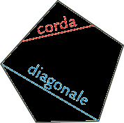

I poligoni
La parola poligono dal greco polùs, e gonos “molti angoli”, Definiremo anzitutto che cosa è un poligono e daremo poi altre definizioni collegate alla prima. Prima di dare la definizione di poligono, dobbiamo assumere un ulteriore assioma.
Assioma 1.6 (Assioma di partizione del piano da parte di una poligonale chiusa) Data una qualsiasi poligonale chiusa non intrecciata, essa divide l’insieme dei punti del piano che non le appartengono in due sottoinsiemi: uno che non puo` contenere rette, i punti del quale vengono detti interni alla poligonale (in giallo nella figura), e uno che contiene delle rette, i punti del quale vengono detti esterni alla poligonale (in bianco). □

Definizione. Consideriamo una poligonale chiusa e non intrecciata. Chiamiamo poligono la figura formata dalla poligonale e dai suoi punti interni. I vertici e i lati della poligonale si chiamano rispettivamente vertici e lati del poligono. La poligonale si dice anche contorno o frontiera del poligono. □
Definizione 2. Una diagonale di un poligono è un segmento che congiunge due suoi vertici non consecutivi (cioè non appartenenti allo stesso lato). Una corda è un segmento che congiunge due punti del contorno del poligono appartenenti a lati distinti. □
Definizione 3. Un angolo interno a un poligono è un angolo individuato da due lati consecutivi del poligono e dal vertice in comune. Ogni angolo adiacente a un angolo interno si dice esterno al poligono. □